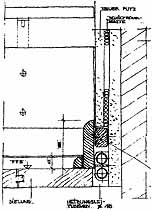

Aecht-Bairischer Heiz-
Aecht-Bairischer Heiz-Wer über die allseits mittels Klimaapokalyptik beschworene Energieeinsparung ein bißchen nachdenkt, wird schnell darauf kommen: Absaufende Dämmstoffe oder aufgeschäumte Baustoffperversionen, subventionsbedürftige Schwindelenergieerzeugung aus Wind und Sonne, die mehr Energie schluckt als erzeugt, können Heizenergie nicht einsparen. Das kann nur die Heiztechnik selbst. Eine kritische Analyse der gängigen Systeme im Vergleich zeigt:
Worauf es hier ankommt? Weiterlesen!
Die Temperierung der Gebäude-Hüllflächen

|
Sehr geehrter Herr Fischer, ich habe mit Begeisterung Ihre Ausführungen über die Hüllflächentemperierung eigentlich nicht gelesen, sondern verschlungen. In allen Punkten kann ich Ihnen aus eigener Erfahrung nur Recht geben. Wir haben selbst so einen "alten Koffer" (1905) in Vollmassivziegelbauweise mit entsprechend dicken Außenwänden. Vor ca. 15 Jahren haben wir im Rahmen von erforderlichen Sanierungsmaßnahen auch die Gebäudeheizung vollständig neu konzipiert. Nachdem wir verschiedene Varianten durchgerechnet hatten, stellten wir uns unter anderem die Frage, wieso wir die teuer erkaufte Speichermasse mit riesigem Aufwand gegen äußeren Wärmeeintrag abschotten sollten, um die Energie dann für teures Geld von Innen in die Wände zu pumpen. -- Nee, nee, nee, eine Außenisolation kam gar nicht in Frage. Desweiteren war mir die Wirkung einer Strahlungsheizung aus meinem Heimathaus (ein Hof von ca. 1780) sehr wohl bekannt. Das "Öfelchen" - ein Traum von einem großen mit grünen Kacheln verkleidetem, gusseisernen Holz-Kohleofen ... - gegenüber der Fenster angeordnet, hat im Winter eine brüllende Hitze abgestrahlt. So hatten wir trotz super Fugenlüftung und ganz früher noch Einscheibenverglasung, hemdsärmliges Wohlfühlklima. Damals fand ich das einfach nur toll, heute weiss ich, dass durch die Wärmestrahlung die Raumunschliessungsflächen aufgeheizt wurden, mit den bekannten Effekten. Mit zu unserem Heizungskonzept gehörte daher ein möglichst hoher Strahlungsanteil und eine Temperierung der Raumumschliessungsflächen. Daher haben wir dann an den Innenseiten der Außenwände eine Wandvorheizung mit einfachen Rohren eingebaut, ähnlich Ihrer Skizze. Hierzu haben wir allerdings eine raumhohe, innenliegende, dünne Vorsatzschale eingebaut. (Eine offene Sockelleistenheizung nach US-Manier wäre zwar auch gegangen, hätte aber durch Konvektion Dreckstreifen an der Wand erzeugt, -man muss nicht alles haben-) Diese Vorsatzschale hat uns zwar einige qm Fläche gekostet, aber dieser "Verlust" wird von den daraus resultierenden Vorteilen mehr wie aufgehoben. Gegenüber raummäßig vergleichbaren Neubauten (mit guter Außenisolation, hervorragend geeignet für überdimensionale Kühlschränke) in unserem Freundeskreis, haben wir nur ca. 2/3 derer Heizenergie aufzuwenden und trotzden keine kalten Füße, keinen Schimmeltempel und bei 20 Grad schon "knackig warm". (Ja - und im Sommer brauchen wir auch nicht zu heizen.) Die in Ihren Ausführungen durchklingenden Behauptungen der Isolierlobby haben wir in dieser Zeit leider in allen Variationen erleben dürfen (von.. ist alles Blödsinn, bis zum "lassen Sie sich Ihre Studiengebühren wieder zurückzahlen"). Wir waren damals ziemlich verunsichert und haben daher verschiedene Messstellen eingebaut. (Wandfeuchte durch Dampfdiffussion und falsch berechnete Taupunktlage etc. waren nach all dem Geseire unsere Befürchtungen) Wie die Messergebnisse zeigten, waren diese Befürchtungen alle grundlos. Zur Ehrenrettung von uns "Bauigeln" muss ich allerdings hinzufügen, dass es im Bausektor auch gute und vernünftige Fachleute gibt, vom Handwerker bis zum Ingenieur/Architekten, die sich durchaus sinnvoll mit den Realitäten auseinandersetzen und hiervon auch was verstehen. Leider sind diese, mangels Bezeichnungsschild um den Hals, insbesondere für den bautechnischen Laien nicht immer einfach zu erkennen. Suchen lohnt sich. Nebenbei bemerkt, wäre es für manchen "Schnäppchenjäger" sicher besser, nicht ausgerechnet in der Planungsphase "es lebe billig" zu rufen, denn in der Regel ist dann in der Ausführung und im Betrieb, Geiz nicht geil, sondern sauteuer. Sich im Vorfeld schon vernünftigen professionellen Rat einzuholen, auch wenn´ s was kostet, spart richtig Kohle (oder Gas/Öl etc). Eine Gebäudeheizung ist keine Blumenvase die man als notwendiges Accessoire in einen fertigen Raum (ausgehöhlter Styroporklotz?) reinstellt, sondern in unserer Klimazone integraler Bestandteil eines Gebäudes, gar nicht simpel sondern ein sehr komplexes Zusammenspiel von Bau und Technik. Mit Ihrer Webite geben Sie jedem Interessierten eine hervorragende Möglichkeit sich umfassend über ein jeweiliges Themengebiet zu informieren. Insbesondere auf dem breiten Gebiet der Altbausanierung und Bestandserhaltung. Ihre Linksammlung ermöglicht es, sich auch über andere Ansichten und Möglichkeiten umfassend zu informieren. Es ist nicht immer einfach, gute und richtige Tatsachen gegen eine Wand von Ignoranz, Besserwisserei bis hin zu ausgeprägtem Profitdenken zu vertreten. Ich möchte Sie hier vielleicht einfach in Ihrem Tun etwas bestärken, so wie sie es bei mir mit Ihren Ausführungen auch bei mir erreicht haben. Mit freundlichen Grüßen Albert Bitzer |